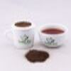

Radella Tea Estate
Radella Tea estate famous the production Green tea due its high quality of standards and its located in Nanu Oya,Nuwara Eliya.The Tea was planted in 1896 in Radella for the first time.
The Tea estate comprises of 242 hectares and has a workforce of 750 and has four divisions namely as Upper and Lower Radella and the Wangie oya upper and lower sections.The elevation of the Radella estate ranges from 1,402.08m to 1,950.72m.

Dunkeld Tea Estate
Dunkeld situated around the castlereagh reservoir and this estate have been major tourist attractions beacuse of its location
being located in the banks reservoir.The Dunkeld estate is located between 4000-5000 feet.THe estate comprises of 220 hectares of high grown Ceylon Tea and produces about 350 Million Kgs annually.

Damro Labookellie Tea Estate
Damro tea comprises of more than 5000 acres and is situated in Nuwara Eliya.It is one of the most scenic tea estate in Sri Lanka.The place consist of visitors center which consist of a cafe and many more along with the scenic spots from the estate.It mainly produces Green tea,Black Tea,CTC,Orthodox types of tea.
| Name of the Plantation | Type of Tea | Exported to | Image |
|---|---|---|---|
| Radella Tea Estate | Green Tea Black Tea |
Turkey Middle East |
 |
| Dunkeld Tea Estate | Black Tea White Tea Herbal Tea |
Middle East Iran Europe |
|
| Damro Tea | Green Tea Black Tea |
Turkey Middle East |
|
| The above shows some of the Tea types that produces in Sri Lanka along with particular Tea Planatation Name | There are about 10-15 different types tea prodcued in Sri Lanka | Sri Lanka Export more than 100 Coundtries. |